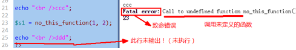

昨日回顾
1，是针对数字类型（int，float）进行的运算；
2，取余运算符（%），只针对整数进行运算；
自增自减运算符：++ --
这是“单目”运算符。是针对一个数字进行的自加1或自减一运算。
“英文字母字符串”，也可以进行“自加运算”。
1，如果是独立语句中，前自增（++$i)和后自增($i++)结果是一样的！
2，如果自增运算在其他语句中，前自加是先将自身加1，然后进行其他运算，而后自加，是先进行其他运算，然后自加——可见，这种情况，影响的是“其他运算”，而该变量本身仍然是结构一样。
3，前自加效率略高于后自加——推荐在循环中使用前自加。
1，&&：只要有一个是false，结果就是false
2，||： 只要有一个是true，结果就是true
在一个逻辑与或逻辑或运算中，如果该运算符的前后都需要进行一定的“逻辑判断”（比如最常见的就是大小比较），则此时我们应该将这种逻辑判断的“简单情形”放在此逻辑运算符的前面（左边），这样就可以造成逻辑运算的短路效果，以达到提示效率的目的。
字符串运算符： .
=：
+= -= *= /= %=
数据1 ？ 数据2 ： 数据3
基础规定：
按位与：1 & 1==>>1 1 & 0==>>0 0 & 1==>>0 0 & 0==>>0
按位或：1 | 1==>>1 1 | 0==>>1 0 | 1==>>1 0 | 0==>>0
按位非：~1==>> 0 ~0 ==>> 1
按位异或：1 ^ 1==>>0 1 ^ 0==>>1 0 ^ 1==>>1 0 ^ 0==>>0
就是讲2个10进制整数的2进制数值形式的每一个对应位上的数字（此时只有1和0了）进行基本按位与运算之后所得到的结果。
原码：就是数学上的一个数字的二进制形式，并规定：
正数的第1位为0
负数的第1为为1
反码：
正数的反码是其本身；
负数的反码是这样：符号位不变，其余位取反。
补码：
正数的补码是其本身；
负数的补码是这样：符号位不变，其余位取反后加1（即反码加1）。
这里说的一组事物的开关状态，要理解为其实是一组数据的开关状态：即该组数据的每一个，都只有2个值，或2个状态，可以表示为“真假”，或1和0
做法（假设有5个事物/数据）：
1，设定对应的5个常量D1, D2, D3, D4, D5，其值分别是1,2,4,8， 16
2,，定义一个变量$state，该变量就代表这5个事物/数据的任意可能组合。
3，则我们可以有如下3个任务（对应3种算法逻辑）：
3.1：判断任意一个事物/数据的当前状态（n代表1-5中的其中一个）：
if( ($state & Dn) > 0){开着}else{关着}
3.2：打开指定的任意一个事物/数据：
$state = $state | Dn; //此时对应的该事物/数据处于“开启”状态，而且不影响其他
3.3：打开指定的任意一个事物/数据：
$state = $state & (~Dn); //此时对应的该事物/数据处于“关闭”状态，而且不影响其他
+：合并2个数组而已，如果其中有重复的下标，则以前一个数组中的为准。
==：判断是否“模糊相等”，
array(1=>1, 2=>2 ) == array(2=>2, 1=>1); //true
===：判断是否“严格相等”；
array(1=>1, 2=>2 ) === array(2=>2, 1=>1); //false
错误控制运算符@：抑制一个表达式在运行时所产生的错误提示。
运算符的优先级 ：
1，意识到运算符有优先级；
2，括号最优先，赋值通常是最“落后”。
3，如果不是和清晰，就尽量加上括号来明确界定其运算顺序。
流程控制
循环结构
循环的中断
循环中，有两种中断语句可以使用：
break：
用于完全终止某个循环，让执行流程进入到循环语句后面的语句；
continue：
用于停止当前正在进行的当次循环，而进入到循环的“下一次”过程中去（通常就是循环的开始位置）；
在php中，该两个循环有更强的能力：中断“更多层”的循环，语法如下：
break 正整数n; //比如1,2，3；
continue 正整数n; //比如1,2，3；
循环的“层”，指的是从当前中断语句（break或continue）算起，往代码的“外部”数循环的个数，就是层数。比如：
for(...){ //循环1
for(...){ //循环2
for(...){ //循环3
break 2; //此时会中断循环2：其实指中断“2层”
//对此break语句，循环3是其“第一层”，循环2是其第2层，循环1是其第3层
}
contine 2; //此时会中断循环12：其实指中断“2层”
//对此contine语句，循环2是其“第1层”，循环1是其第2层，
}
}
do while循环：
for循环语句形式：
for（【循环变量初始化】； 【循环变量的条件判断】； 【循环变量的改变】){
//循环体语句。。。。
}
while循环语句形式：
【循环变量初始化】
while(【循环变量的条件判断】){
//循环体语句。。。
【循环变量的改变】
}
do while循环语句形式：
【循环变量初始化】
do {
//循环体语句。。。
【循环变量的改变】
}while(【循环变量的条件判断】)；
说明：
1，do while会先进入循环体执行一次（不判断条件）；
2，然后，判断循环条件是否满足，如果满足，又会回到do的开始位置（进入循环体）执行——这就是循环的正常情况。
3，如果不满足，就结束循环。
流程控制的替代语法
· if ( ... ) : 。。。。 endif;
· if ( ... ) : 。。。else: 。。。 endif;
· if ( ... ): 。。。elseif( ... ) : 。。。 elseif( ... ): 。。。 else: 。。。 endif;
· switch( ... ) : case ... case ... endSwitch;
· while(...): 。。。endwhile;
· for(...; ...; ...): 。。。 endfor;
goto语句：
学此语句的目的是：不要用它！
语法形式：
//程序从这里开始：
标识符2：
语句群1.。。。。。
goto 标识符1; //含义是：立即跳转到标识符1所在位置的下一行继续执行
语句群2.。。。。。
标识符1:
语句群3.。。。。。
goto 标识符2:；
控制脚本执行顺序
die(字符串)/exit(字符串)：
输出该字符串后，立即停止php的执行！即后续程序不再执行，包括后续的其他所有php和html代码部分。
exit是die的同义词。他们也可以不加字符串，而是直接停止。
sleep（$n)
让程序停止运行指定的秒数。然后等待过了那个时间后，就继续运行！
注意，其单位是“秒”；
文件加载
综述和基本语法：
1，有4个文件加载语句：include, require, include_once, require_once
2，他们的使用形式完全一样，比如： include “要加载的文件路径”; 或： include (“要加载的文件路径”);
3，他们的含义也几乎完全一样：只是在加载失败时或是否重复加载这种情况，有所不同。
4，他们可以载入php或html文件；
文件加载的路径问题：
前提说明：以下的说明举例，以include为例，也适用于其他3个加载语句；
有3中路径形式可以使用：
相对路径：
是相对于当前网页文件所在的位置来定位某个被加载的文件位置，主要依赖以下2个特殊的路径符号：
./ ：表示当前位置，即当前网页文件所在的位置（目录）；
../ ：表示上一级位置，即当前网页文件所在的位置的上一级位置（目录）；
我们需要用这2个符号来表达位置信息，比如：
include ‘./page1.php’; //表示当前网页文件所在位置的page1.php文件；
include ‘../page2.php’;
include ‘../ab/page3.html’;
绝对路径：
绝对路径又分2种：
本地绝对路径：
比如：
include “c:/d1/d2/p1.php”;
include “f:/f1/abc/p2.html”;
特别注意：我们其实几乎都不应该在代码中直接写这种本地绝对路径！
但，其实我们这种本地绝对路径的写法是很常用的！
那怎么做？示例如下：
网络绝对路径：
比如：
include “http://www.abc.com/p1.php”;
include “http://www.baidu.com/index.php”;
“无路径”（不推荐）：
形式就是没有给出路径信息，而只给出文件名，我们不推荐。
比如：include ‘page1.php’; //此时通常其实php语言引擎会在当前网页目录下找该文件。
文件载入和执行过程详解
· 第1步：从include语句处退出php脚本模式（进入html代码模式）
· 第2步：载入include语句所设定的文件中的代码，并执行之（如同在当前文件中一样）
· 第3步：退出html模式重新进入php脚本模式，继续执行之后的代码
它相当于：
4个载入语句的区别
include和require的区别：
include载入文件失败时（即没有找到该文件），报一个“提示错误”，然后继续执行后续代码；
requre载入文件失败时，报错并立即终止执行。
通常，require用于在程序中，后续的代码依赖于载入的文件的时候。
include_once和require_once的区别：
同include和require的区别：
include和include_once的区别：
include载入的文件不判断是否重复，只要有include语句，就会载入一次——即此时可能导致重复载入。
include_once载入的文件会有内部判断机制是否“前面代码”已经载入过，如果载入过，就不再载入。
require和require_once的区别：
同include和include_once的区别。
在被载入文件中return语句的作用
1，一个载入语句，如果载入成功，其实是有返回值的，为1，如果载入失败，则返回的是false。
（虽然我们通常不去使用该返回值）。
但，如果被载入文件中有return语句，此时就有另外的机制和作用：
2，return语句此时的作用是终止载入过程——该return语句的后续被载入文件的代码不再载入。
运行结果为：
3，return语句也可以用于该被载入文件载入时返回一个数据，形式为：return XX数据；
运行结果为：
错误处理
错误的分类
通常分3种：
语法错误：
程序运行之前，都要先检查语法。如果语法有错误，就会立即报错，并且不会去执行程序。
运行时错误：
就是在程序语法检查通过后，，开始运行程序并在此过程中遇到的错误。常见的有3中：
提示性错误：
警告性错误：
致命错误：
逻辑错误：
指的是，程序本身可以正常执行，没有报错——但“计算结果”却错了。
错误的分级
php语言中，将各种错误进行了不同级别的分类归纳，并形成大约有10几个级别的错误，这就是技术层面的错误分级。
每一级别的错误，都有一个“代号”，这个代号其实也就是一个系统内部的“常量而已”。比如：
系统常见错误：
E_ERROR： 致命错误
E_WARNING: 警告性错误
E_NOTICE: 提示性错误
用户可自定义的错误：
E_USER_ERROR： 自定义致命错误
E_USER_WARNING: 自定义警告性错误
E_USER_NOTICE: 自定义提示性错误
其他：
E_STRICT: 严谨性语法检查错误
E_ALL 代表“所有错误”。
详细参考手册：
下面来看看这些错误代号的实际值：
运行结果为：
错误的触发
错误的触发，就是让错误“发生”。
有两种方式会触发错误：
系统触发
程序运行到某行代码，确实出现了某种错误，此时系统就会报错——这就是触发了系统错误。
系统触发的典型错误有这3种：
E_NOTICE: 提示性错误：会输出错误提示，并继续执行后续代码；
比如使用不存在的变量或常量：
E_WARNING: 警告性错误：会输出错误提示，并继续执行后续代码（也可能看具体情况，比如require)
比如include载入一个不存在的文件：
E_ERROR： 致命错误：导致程序无法执行后续语句；
比如调用一个不存在的函数！

自定义触发：
当我们处理某些数据的时候，本来数据本身是没有错误的，但根据具体应用（业务）的需要，会要求数据满足某种条件，而该数据并不满足的时候，我们就可以在程序中“主动”去触发（创建）一个错误，以表明该数据的“非法性”。
语法形式：
trigger_error(“错误提示信息内容”, 3中用户错误代号之一);
其中触发了用户的致命错误(E_USER_ERROR）,也会终止程序的后续执行。
错误报告的显示问题
所谓错误报告，就是显示在网页上的错误提示内容！
有关错误报告，有2个问题需要处理：
是否显示错误报告（display_errors)：
有2种做法可以来设定是否显示：
做法1：
在php.ini文件中，设定display_erros的值，为on（显示），或为off（不显示）
可以修改为：
当然，作为开发阶段，我们都应该显示错误信息。
注意：前提条件都是我们apache已经装载了php.ini文件——这一点，需要在apache的配置文件httpd.config中加入如下一行：
PHPIniDir “php.ini文件的了位置（路径）”
比如：
方法2：
直接在php的脚本文件中设使用函数ini_set()来对其进行设置：
当然，如果设置为1，就是显示！
注意：
1，不管哪种形式，该单词是一样的：display:errors
2，使用php.ini配置，影响的是全局（即所有php网页）；
3，在某个脚本代码中使用ini_set()设置，就只影响该脚本代码本身——这是常用的方式。
4，脚本中的设置优先于php.ini中的设置。
显示哪些级别的错误报告（error_reporting)：
显然，前提是“display_errors”设置为On(或1），表示可以显示。
显示哪些级别的错误报告，也有2个做法：
做法1：在php.ini文件中；
这个值目前代表“所有错误”，都显示。
修改为：
此时就只显示E_NOTICE级别的错误
更多示例为：
error_reporting = E_NOTICE | E_WARING | E_ERROR //显示该3种；
error_reporting = E_ERROR | E_USER_ERROR //显示该2种严重错误
要想代表真正的“所有错误”，应该写为：E_ERROR | E_STRICT，图示如下：
做法2：在当前的脚本代码中：
跟php.ini中设置其实是一样，举一些例子如下：
ini_set(“error_reporting”, E_NOTICE); //就显示该一个级别的错误
ini_set(“error_reporting”, E_NOTICE | E_WARNING), //显示2个级别
ini_set(“error_reporting”, E_NOTICE | E_WARNING | E_ERROR), //显示3个级别
ini_set(“error_reporting”, E_ALL | E_STRICT), //这才代表显示所有错误！
错误日志的记录问题
错误日志其实就是错误报告，只是它会“写入文件中”，此时就称为错误日志！
也有2个问题，每个问题也有2种做法：
是否记录log_errors：
php.ini中：
log_errors = On 或 Off
脚本中：
ini_set(“log_erros”, 1); 或 0
补充一句：
1：ini_set(“php配置项”， 值)； //用于脚本中设置php.ini中是某项的值。
2,：$v1 = ini_get(“php配置项”)； //用于获取php.ini中是某项的值
记录到哪里error_log：
一般就只有2个写法：
写法1：直接使用一个文件名，此时系统会自动在每个文件夹下都建立该文件名，并用其记录该文件夹下的所有网页文件发生的错误信息。
然后执行一个有错误的网页，并可以观察到：
其中的内容大约为：
写法2：使用一个特殊的名字“syslog”，则此时所有错误信息都会记录到系统的“日志文件”中。
系统日志文件在这里：控制面板》管理工具》事件查看器》window日志》应用程序：
然后执行一个有错误的网页，并可以观察到：
自定义错误处理器
什么叫错误处理器？
就是一旦发生错误，用来处理该错误的一种“机器”——其实就是一个函数。
自定义错误处理，就是指：
让系统不要去处理错误了，而完全由我们（开发者）来对错误进行处理：显示和记录。
做法，其实非常简单，就2步：
第一步：
设定要用于处理错误的函数名！
set_error_handler(“f1”);
第二步：
去定义该函数！
function f1(){
//这里可以任意写代码：自然正常是去显示错误报告，和记录错误日志。
}